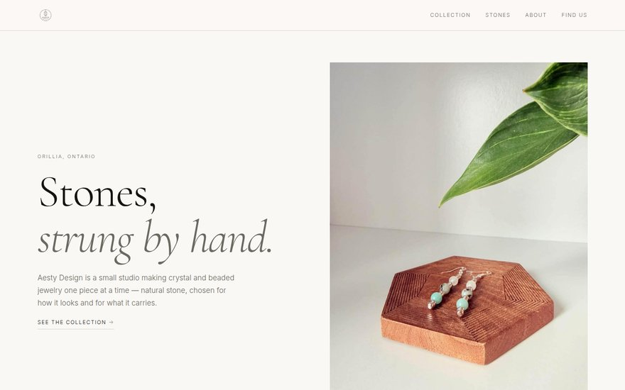
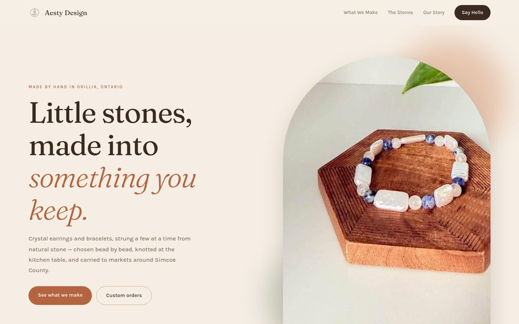
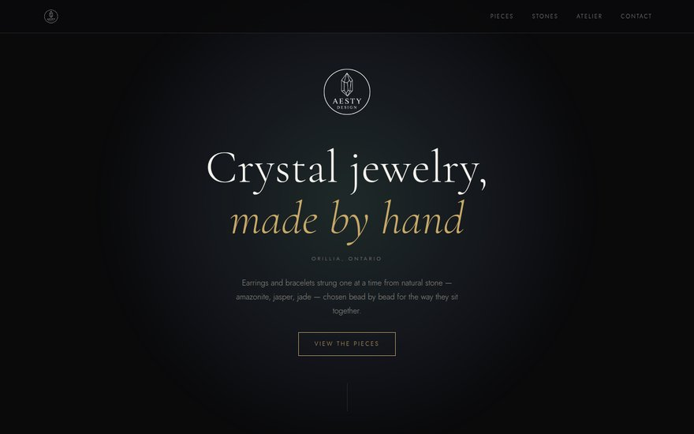
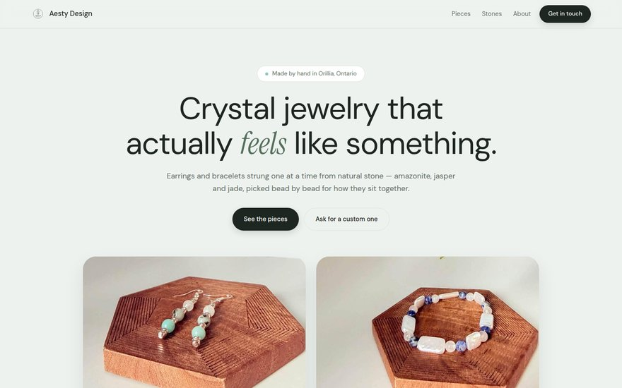
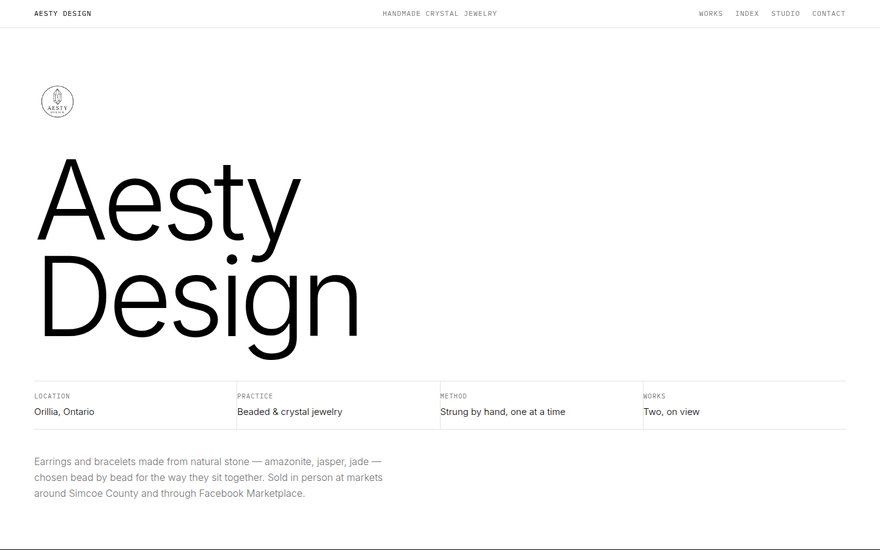

Version 01
Editorial
Bone white and ink, big light serif headlines, hairline rules and a lot of air. Reads like a print magazine feature — closest in feel to the logo itself.
Open Version 01Website concepts · Pick a direction
Same business, same photos, same words — five different visual directions. Open each one, scroll all the way down, and tell me which feels most like Aesty. We build out the winner from there.

Bone white and ink, big light serif headlines, hairline rules and a lot of air. Reads like a print magazine feature — closest in feel to the logo itself.
Open Version 01
Sand, clay and deep brown with arched photos and soft rounded cards. Handmade and friendly — the market-table version, warm rather than polished.
Open Version 02
Near-black with gold rules and a soft glow behind each piece. The stones pop hardest here. Feels like a jeweller rather than a craft stall.
Open Version 03
Sage and mist, rounded cards, pill buttons. The most "ready to be a shop" of the five — product cards here become real listings with almost no redesign.
Open Version 04
Black on white, museum labels, enormous photos and small precise type. Treats each piece as a catalogued work. The boldest and most design-forward option.
Open Version 05